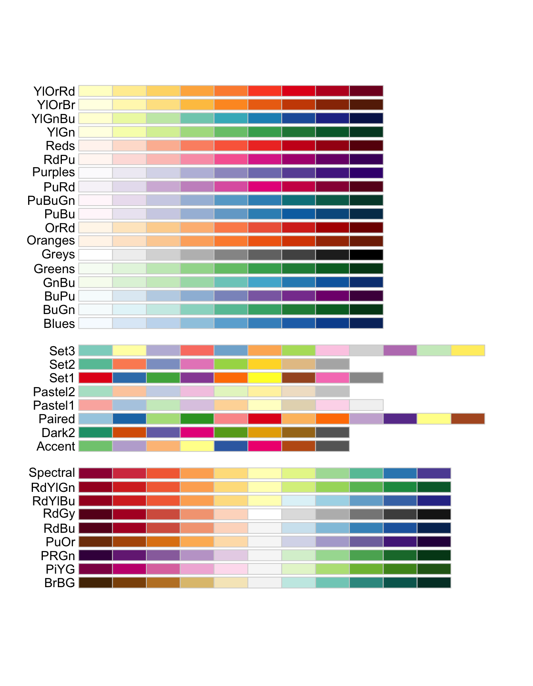
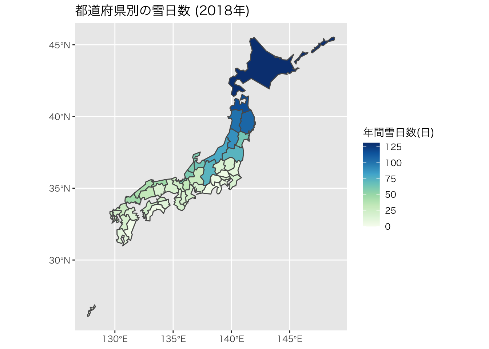
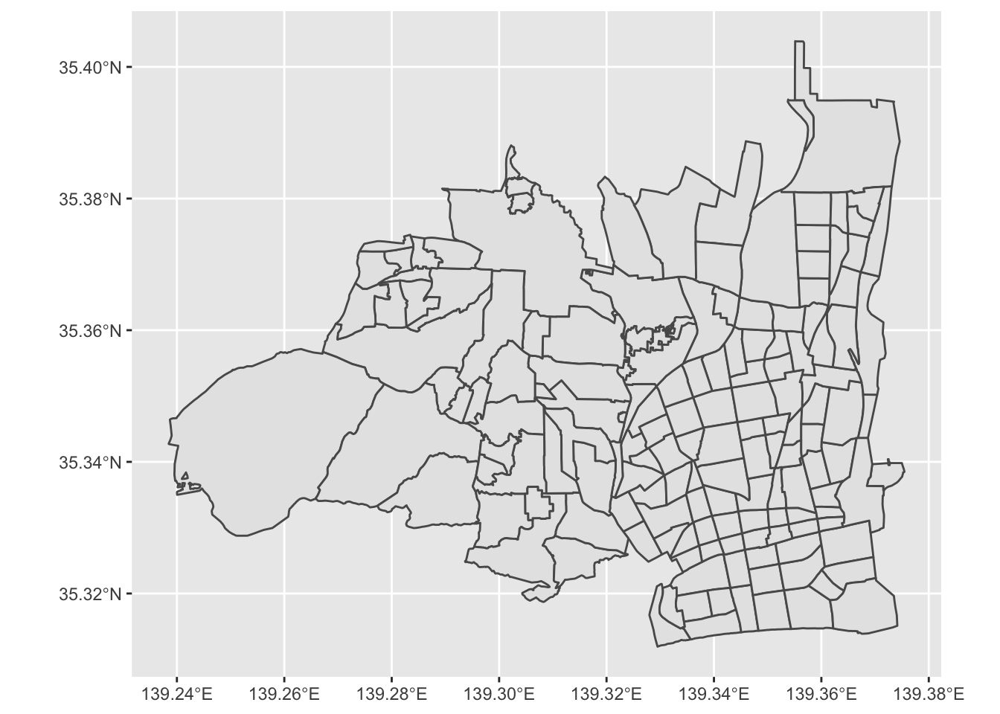
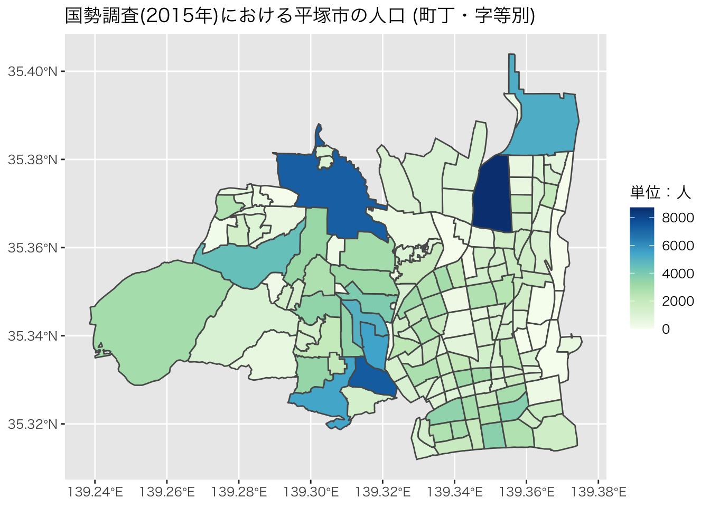
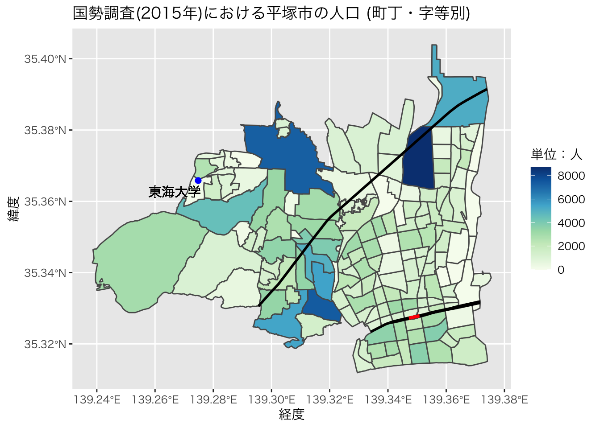
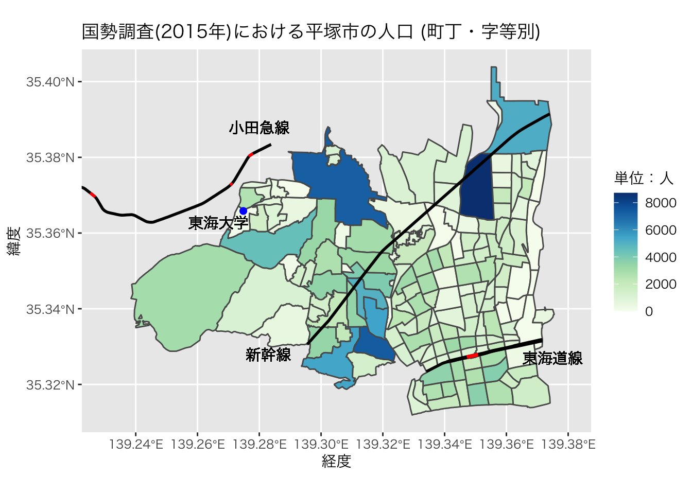
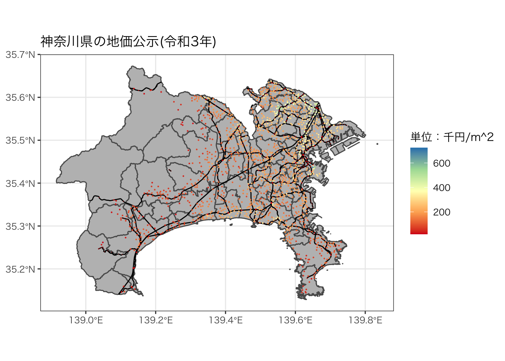
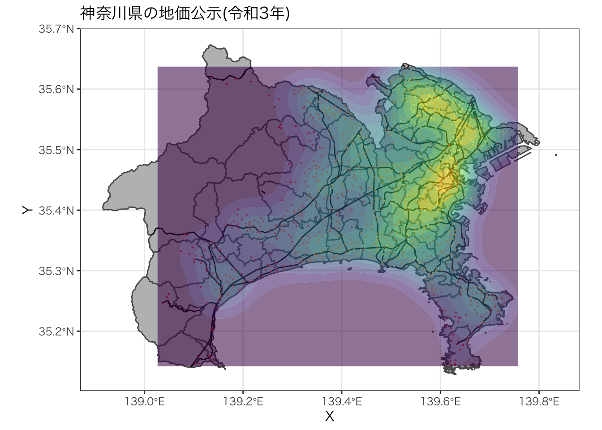

chapter: 5 可視化(2)：ggplot2による地図作成
空間的な広がりのあるデータを扱う際には、地図による可視化がデータの特徴を理解する上で大きな助けになります。グラフ描画に用いたggplot2を拡張することで様々な地図データを描画できることはRの魅力の一つです。
地図を使った描画には、位置情報の正確さをそれほど必要としない場合と地理的情報の精度が極めて情報な場合の２通りが考えられます。前者は、コロプレス図と呼ばれるいわゆる「白地図の塗り分け」のようなものが相当します。後者は、GISと呼ばれる地理情報科学の分野に近いケースで、「迷惑施設が県境付近に立地しやすい」という仮説を検証するなど、正確な地理情報が前提となる場合です。
5.1 パレットの追加
Rの中で簡単に追加できる色の組み合わせを提供しているpackageにRColorBrewerがあります。慣れてきたらこのカラーパレットを参考にして色を変えてみても良いでしょう。
# install.packages("RColorBrewer")
library(RColorBrewer)
display.brewer.all()
5.2 塗り分け地図の作成
はじめに日本の塗り分け地図をなるべく簡単に作成する方法を学びます。NipponMapというpackageでは見やすさを重視して、海岸線など一部を単純化しています。都道府県別の塗り分けなどは地理情報の精度よりも見やすさを優先すべきです。
なお、left_join関数は、left_join(A,B, by="C")であるとき、Cという列をキーにして、AにBの情報を追加する関数です。
#一回だけ以下のインストールが必要
#install.packages(c("NipponMap", "tidyverse"))
# ライブラリコマンドでの読み込みは毎回必要
library(readxl)
library(NipponMap)
library(sf)## Linking to GEOS 3.8.1, GDAL 3.1.4, PROJ 6.3.1library(tidyverse)## ── Attaching packages ───────────────────────────────────────────────── tidyverse 1.3.0 ──## ✓ tibble 3.0.1 ✓ dplyr 1.0.2
## ✓ tidyr 1.1.1 ✓ stringr 1.4.0
## ✓ readr 1.3.1 ✓ forcats 0.5.0
## ✓ purrr 0.3.4## ── Conflicts ──────────────────────────────────────────────────── tidyverse_conflicts() ──
## x psych::%+%() masks ggplot2::%+%()
## x scales::alpha() masks psych::alpha(), ggplot2::alpha()
## x readr::col_factor() masks scales::col_factor()
## x purrr::discard() masks scales::discard()
## x dplyr::filter() masks stats::filter()
## x dplyr::lag() masks stats::lag()#ウェブサイトから直接ダウンロードする場合
url1<-"https://yamamoto-masashi.github.io/DSlec/20201028sample.xls"
download.file(url1,destfile="20201028sample.xls")
# エクセルファイルの読み込み
# ヘッダ部分を読み飛ばしている
# sheet=1を変更することで別のシートも読める
sampleDB<-readxl::read_excel("20201028sample.xls",skip=5,sheet=1)## New names:
## * `` -> ...1
## * `` -> ...2# 変数の対応関係
# A1101_総人口【人】
# A1301_15歳未満人口【人】
# A1303_65歳以上人口【人】
# B1101_ 総面積（北方地域及び竹島を除く）【ｈａ】
# B1103_ 可住地面積【ｈａ】
# B4107_ 雪日数（年間）【日】
# B4108_ 日照時間（年間）【時間】
# D110101_市町村数【‐】
# E6102_大学数【校】
# E6302_大学学生数【人】
# F610201_超過実労働時間数（男）【時間】
# F610202_超過実労働時間数（女）【時間】
# H110202_空き家数【戸】
# 列１と列２の名前を変更している。
names(sampleDB)[1:2]<-c("prefcode","prefnameJ")
# データと地図を結合する際にキーの型が同じ必要があるので
# 数値型を文字型に変更している。
sampleDB$prefcode<-as.character(sampleDB$prefcode)
# 地図の情報はNipponMapから取り出しています。
# この方法は以下で教えていただきました。
# https://ill-identified.hatenablog.com/entry/2020/12/07/134705
map <- read_sf(system.file("shapes/jpn.shp", package = "NipponMap")[1],
crs = "+proj=longlat +datum=WGS84")
# 地図情報に総務省のデータベースを接続
mapDB<-left_join(map,sampleDB, by=c("SP_ID"="prefcode"))
# 地図にプロット
ggplot(mapDB, aes(fill = B4107)) +
geom_sf() +
scale_fill_gradientn(colors=brewer.pal(9,"GnBu"))+
theme_gray (base_family = "HiraKakuPro-W3")+
labs(fill = "年間雪日数(日)")+
ggtitle("都道府県別の雪日数 (2018年)")
5.3 よりGISライクな地図の作成
以下では地理情報をできるだけ正確に扱った地図の描画について解説します。例として用いるデータは、2015年国勢調査の平塚市（小地域）です。このファイルは、総務省統計局のサイトからダウンロードできます。
地図情報のうち、ベクターデータは、シェープファイルという形式で利用することがデフォルトになっています。シェープファイルとは、Esri社が開発したGIS用のデータフォーマットで、ポイントデータ(1組以上の緯度、経度情報)、ラインデータ(2組のポイントデータを結んだものの集まり)、ポリゴンデータ(ラインデータを結んだもの)を格納できます。
シェープファイルの拡張子は、.shpですが、シェープファイルはこのファイル単独では動作しません。データをダウンロードするときはついてくる複数のファイル（最低でも３つはある）を全て同じフォルダに保存するようにしてください。
library(sf)
map <- read_sf("Hiratsuka/h27ka14203.shp",
crs = "+proj=longlat +datum=WGS84") # 平塚市のシェープファイル
ggplot(map) + geom_sf()
各町丁・字等別の人口で塗り分けをしてみましょう。
ggplot(map) + geom_sf(aes(fill=JINKO))+
scale_fill_gradientn(colors=brewer.pal(9,"GnBu"))+
theme_gray (base_family = "HiraKakuPro-W3")+
labs(fill = "単位：人")+
ggtitle("国勢調査(2015年)における平塚市の人口 (町丁・字等別)")
さらに鉄道路線、大学の立地などを重ねてみましょう。
以下の例では、鉄道のデータを国土数値情報という国土交通省が運営しているウェブサイトからダウンロードして使っています。このサイトの「4.交通」の中にある「鉄道(ライン）」というデータを使用しています。なお年ごとに路線が変化しているため、国勢調査に合わせて2015年のデータを使用しています。
この鉄道データは全国のJR及び私鉄を全て含むので、このままプロットすると全国の全ての鉄道路線が表示されます。そのため平塚市の路線に限定する必要があります。
そこで使用しているが、st_intersectionという関数です。この関数を使うと二つの地理データに共通の部分だけを残すことができます。鉄道(ライン)データは駅の情報も含むため、駅も赤色で表示しています。
最後に東海大学の位置をannotate関数を使って東海大学の場所を、geom_text関数を使って、東海大学の名称を表示しました。これらの関数は緯度、経度を使って表示することができます。
trainline <- read_sf("Train/N02-15_RailroadSection.shp",
crs = "+proj=longlat +datum=WGS84") # 鉄道線路網のシェープファイル
trainstation <- read_sf("Train/N02-15_Station.shp",
crs = "+proj=longlat +datum=WGS84") # 鉄道駅のシェープファイル
ggplot(map)+
geom_sf(aes(fill=JINKO))+
geom_sf(data=st_sf(geometry=st_intersection(st_union(map),st_union(trainline))),
color="black",size=1)+
geom_sf(data=st_sf(geometry=st_intersection(st_union(map),st_union(trainstation))),
color="red",size=1)+
annotate("point", x = 139.274823, y = 35.365831, colour = "blue", size=2)+
geom_text(aes(x = 139.266823, y = 35.362831), label = "東海大学",
family = "HiraKakuProN-W3")+
scale_fill_gradientn(colors=brewer.pal(9,"GnBu"))+
theme_gray (base_family = "HiraKakuPro-W3")+
labs(fill = "単位：人")+
xlab("経度")+ylab("緯度")+
ggtitle("国勢調査(2015年)における平塚市の人口 (町丁・字等別)") 
何か足りません。そうです。小田急線が描かれていないのです。その理由は、小田急線が平塚市内を通っていないためです。そこで鉄道ラインデータの切り出しの際にのみ、隣の秦野市のデータを加えて、小田急線を表示したいと思います。
HadMap <- read_sf("Hadano/h27ka14211.shp",
crs = "+proj=longlat +datum=WGS84") # 秦野市のシェープファイル
ggplot(map)+
geom_sf(aes(fill=JINKO))+
geom_sf(data=st_sf(geometry=st_intersection(st_union(map),st_union(trainline))),
color="black",size=1)+
geom_sf(data=st_sf(geometry=st_intersection(st_union(map),st_union(trainstation))),
color="red",size=1)+
geom_sf(data=st_sf(geometry=st_intersection(st_union(HadMap),st_union(trainline))),
color="black",size=1)+
geom_sf(data=st_sf(geometry=st_intersection(st_union(HadMap),st_union(trainstation))),
color="red",size=1)+
annotate("point", x = 139.274823, y = 35.365831, colour = "blue", size=2)+
geom_text(aes(x = 139.266823, y = 35.362831), label = "東海大学",
family = "HiraKakuProN-W3")+
geom_text(aes(x = 139.28, y = 35.388), label = "小田急線",
family = "HiraKakuProN-W3")+
geom_text(aes(x = 139.283, y = 35.328), label = "新幹線",
family = "HiraKakuProN-W3")+
geom_text(aes(x = 139.375, y = 35.327), label = "東海道線",
family = "HiraKakuProN-W3")+
scale_fill_gradientn(colors=brewer.pal(9,"GnBu"))+
theme_gray (base_family = "HiraKakuPro-W3")+
labs(fill = "単位：人")+
xlab("経度")+ylab("緯度")+
xlim(139.23,139.38)+
ggtitle("国勢調査(2015年)における平塚市の人口 (町丁・字等別)") 
続いて、地価公示のデータをプロットしてみよう。地価公示の詳細はこちらをご覧ください。
地価公示とは、地価公示法に基づいて、国土交通省土地鑑定委員会が、適正な地価の 形成に寄与するために、毎年1月1日時点における標準地の正常な価格を3月に公示 (約26,000地点で実施）するもので、社会・経済活動についての制度インフラとなって います。
主な役割
1.一般の土地の取引に対して指標を与えること 2.不動産鑑定の規準となること 3.公共事業用地の取得価格算定の規準となること 4.土地の相続評価および固定資産税評価についての基準となること 5.国土利用計画法による土地の価格審査の規準となること 等
以下では、地価の動向をみるために、より大きなスケールで可視化を行いたいので、ベースマップを平塚市から神奈川県に変更する。
#地価公示
KanagawaPrice<-read_sf("KanagawaLandPrice/L01-21_14.shp")
#地価を整数型に
KanagawaPrice$price<-as.integer(KanagawaPrice$L01_006)
# 用途が住宅のもののみに
KanagawaPrice %>%
filter(L01_025=="住宅") -> KanagawaPriceHome
#神奈川県の行政界
KanaSHP<-read_sf("KanagawaBorder/N03-21_14_210101.shp",
crs = "+proj=longlat +datum=WGS84") # 神奈川県のシェープファイル
ggplot() +
geom_sf(data=KanaSHP,fill="gray")+
geom_sf(data=st_sf(geometry=st_intersection(st_union(KanaSHP),st_union(trainline))),
color="black",size=0.5)+
geom_sf(data=st_sf(geometry=st_intersection(st_union(KanaSHP),st_union(trainstation))),
color="red",size=0.5)+
geom_sf(data=KanagawaPriceHome,aes(color = price/1000),size=0.1)+
scale_color_gradientn(colors=brewer.pal(5,"Spectral"))+
theme_bw(base_family = "HiraKakuPro-W3")+
labs(color = "単位：千円/m^2")+
ggtitle("神奈川県の地価公示(令和3年)")
これをさらにヒートマップの形で表してみよう
# sf objectから緯度経度を取り出す
KanaCoords<-st_coordinates(KanagawaPrice$geometry)
# XおよびYとして緯度経度を追加する（もっと美しいやり方あると思いますが）
KanaPrice<-cbind(KanagawaPrice,KanaCoords)
ggplot() +
geom_sf(data=KanaSHP,fill="gray")+
geom_sf(data=st_sf(geometry=st_intersection(st_union(KanaSHP),st_union(trainline))),
color="black",size=0.5)+
geom_sf(data=st_sf(geometry=st_intersection(st_union(KanaSHP),st_union(trainstation))),
color="red",size=0.5)+
geom_sf(data=KanagawaPriceHome,aes(color = price/1000),size=0.1)+
geom_density_2d_filled(data=KanaPrice,aes(x = X, y = Y,color=price,alpha=0.5))+
scale_color_gradientn(colors=brewer.pal(5,"Spectral"))+
theme_bw(base_family = "HiraKakuPro-W3")+
theme(legend.position = "none")+
ggtitle("神奈川県の地価公示(令和3年)")